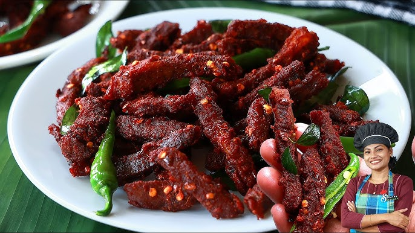

Beef Dry Fry

Beef dry fry is a flavorful and spicy dish made by marinating beef strips in a blend of spices and then stir-frying them
Ingredients:
- beef strips
- spices
- oil for stir-frying
Steps:
- Marinate the beef strips in a blend of spices for at least 30 minutes.
- Heat oil in a wok or large frying pan over high heat
- Add the marinated beef strips to the pan and stir-fry until they are cooked through and slightly crispy on the outside.
- Serve hot with rice or as a side dish with your favorite curry.